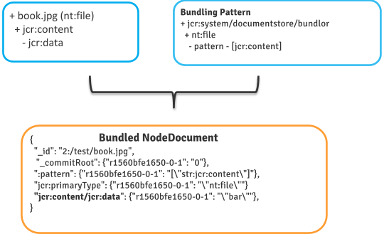

@since Oak 1.6
Document NodeStore stores the JCR nodes as Document in underlying DocumentStore. So depending on backend that Document is stored in following way
The remaining part of the document will focus on the MongoDocumentStore to explain and illustrate bundling concepts.
For very fine grained content with many nodes and only few properties per node it is more efficient to bundle multiple nodes into a single MongoDB document. Such bundling mostly benefits reading because there are less round-trips to the backend. At the same time storage footprint is lower because metadata overhead is per document. This is specially important for the various indexes like _id and _modified_1__id_1 as they have less entries indexed.
Bundling is enabled on per nodetype basis. Bundling definitions are defined as content in the repository under /jcr:system/rep:documentStore/bundlor.
+ <node type name> - pattern - multi
For example below content structure enables bundling for nodes of type nt:file and app:Asset
+ jcr:system
+ documentstore
+ bundlor
+ nt:file (oak:Unstructured)
- pattern = ["jcr:content"]
+ app:Asset
- pattern = ["jcr:content/metadata", "jcr:content/renditions", "jcr:content"]
Once this is done any node of type nt:file created after this will be stored in bundled format. Nodes created before the configuration was added are not affected and their underlying documents are not rewritten.
Key points to note here
Bundling pattern is a multi value value property. The pattern elements are list of relative node paths which should be bundled as part of bundling root. The relative node paths can be of following type:
Support for wildcard patterns is currently experimental
Lets take an example of nt:file node like below
+ /content/book.jpg
- jcr:createdBy = "admin"
- jcr:primaryType = "nt:file"
+ jcr:content
- jcr:data = <blob id>
- jcr:mimeType = "text/plain"
- jcr:uuid = "56befaee-f5fe-4252-87f8-0dcc8a624dd5"
- jcr:lastModifiedBy = "admin"
- jcr:primaryType = "nt:resource"

This JCR node structure would be stored in MongoDB in 2 documents
{
"_id" : "2:/content/book.jpg",
"jcr:created" : {"r151ce899ac3-0-1" : "\"dat:2015-12-23T16:41:43.055+05:30\""},
"_modified" : NumberLong(1450869100),
"_deleted" : { "r151ce899ac3-0-1" : "false"},
"jcr:createdBy" : { "r151ce899ac3-0-1" : "\"admin\""},
"_commitRoot" : { "r151ce899ac3-0-1" : "0"},
"_children" : true,
"jcr:primaryType": { "r151ce899ac3-0-1" : "\"nam:nt:file\""},
"_modCount" : NumberLong(1)
},
{
"_id" : "3:/content/book.jpg/jcr:content",
"_bin" : NumberLong(1),
"_modified" : NumberLong(1450869100),
"jcr:lastModified" : { "r151ce899ac3-0-1" : "\"dat:2015-12-23T16:41:43.056+05:30\""},
"_deleted" : { "r151ce899ac3-0-1" : "false" },
"jcr:data" : { "r151ce899ac3-0-1" : "\":blobId:xxx\""},
"_commitRoot" : { "r151ce899ac3-0-1" : "0" },
"jcr:mimeType" : { "r151ce899ac3-0-1" : "\"text/plain\""},
"jcr:uuid" : { "r151ce899ac3-0-1" : "\"56befaee-f5fe-4252-87f8-0dcc8a624dd5\""},
"jcr:lastModifiedBy": { "r151ce899ac3-0-1" : "\"admin\""},
"jcr:primaryType" : { "r151ce899ac3-0-1" : "\"nam:nt:resource\""},
"_modCount" : NumberLong(1)
}
Now with bundling pattern like
+ jcr:system
+ documentstore
+ bundlor
+ nt:file (oak:Unstructured)
- pattern = ["jcr:content"]
Would bundle the 2 nodes in nt:file node structure in same MongoDB Document
{
"_id" : "2:/content/book.jpg",
"jcr:primaryType" : { "r15866f15753-0-1" : "\"nam:nt:file\""},
"jcr:content/jcr:primaryType" : { "r15866f15753-0-1" : "\"nam:nt:resource\""},
"_bin" : NumberLong(1),
":doc-pattern" : { "r15866f15753-0-1" : "[\"str:jcr:content\"]"},
"jcr:content/jcr:data" : { "r15866f15753-0-1" : "\":blobId:xxx\""},
"_commitRoot" : { "r15866f15753-0-1" : "0" },
"jcr:content/jcr:uuid" : { "r15866f15753-0-1" : "\"ee045709-81c5-4164-ba08-c03b9c61b102\""},
"jcr:content/jcr:lastModifiedBy" : { "r15866f15753-0-1" : "\"admin\""},
"_deleted" : { "r15866f15753-0-1" : "false"},
"jcr:created" : { "r15866f15753-0-1" : "\"dat:2016-11-15T13:14:02.304+05:30\""},
"jcr:content/:doc-self-path" : {"r15866f15753-0-1" : "\"str:jcr:content\""},
"jcr:createdBy" : {"r15866f15753-0-1" : "\"admin\""},
"jcr:content/jcr:lastModified" : {"r15866f15753-0-1" : "\"dat:2016-11-15T13:14:02.305+05:30\""},
":doc-has-child-bundled" : {"r15866f15753-0-1" : "true"},
"jcr:content/jcr:mimeType" : {"r15866f15753-0-1" : "\"text/plain\""},
"_modified" : NumberLong(1479195840),
"_modCount" : NumberLong(1)
}
So with bundling 1 nt:file would create 1 MongoDB Document. 10M nt:file instance would create 10M MongoDB documents instead of 20M (without bundling)
Lets take a more complex content structure. Assume a nodetype app:Asset having following content
/content/banner.png
- jcr:primaryType = "app:Asset"
+ jcr:content
- jcr:primaryType = "app:AssetContent"
+ metadata
- status = "published"
+ xmp
+ 1
- softwareAgent = "Adobe Photoshop"
- author = "David"
+ renditions (nt:folder)
+ original (nt:file)
+ jcr:content
- jcr:data = ...
+ comments (nt:folder)
Above structure has following characteristics
So 1 asset ~ 15 JCR Nodes and ~ 15 MongoDB documents. Thus by default 10M assets would lead to 150M+ MongoDB Documents. Such a structure can make use of Node Bundling to reduce this storage ratio.
Lets define a bundling pattern like below
+ jcr:system
+ documentstore
+ bundlor
+ nt:file (oak:Unstructured)
- pattern = ["jcr:content"]
+ app:Asset
- pattern = ["jcr:content/metadata", "jcr:content/renditions/**", "jcr:content"]
With this bundling pattern same app:Asset structure would be stored in 1 MongoDB Document excluding ‘comments’ and ‘xmp’ nodes
{
"_children": true,
"_modified": 1469081925,
"_id": "2:/test/book.jpg",
"_commitRoot": {"r1560c1b3db8-0-1": "0"},
"_deleted": {"r1560c1b3db8-0-1": "false"},
":doc-pattern": {
"r1560c1b3db8-0-1": "[\"str:jcr:content/metadata\",\"str:jcr:content/renditions\",\"str:jcr:content/renditions/**\",\"str:jcr:content\"]"
},
"jcr:primaryType": {"r1560c1b3db8-0-1": "\"str:app:Asset\""},
//Relative node jcr:content
"jcr:content/:doc-self-path": {"r1560c1b3db8-0-1" : "\"str:jcr:content\""},
"jcr:content/jcr:primaryType": {"r1560c1b3db8-0-1": "\"nam:oak:Unstructured\""},
//Relative node jcr:content/metadata
"jcr:content/metadata/:doc-self-path": {"r1560c1b3db8-0-1" : "\"str:jcr:content/metadata\""},
"jcr:content/metadata/status": {"r1560c1b3db8-0-1": "\"published\""},
"jcr:content/metadata/jcr:primaryType": {"r1560c1b3db8-0-1": "\"nam:oak:Unstructured\""},
//Relative node jcr:content/renditions
"jcr:content/renditions/:doc-self-path": {"r1560c1b3db8-0-1" : "\"str:jcr:content/renditions\""},
"jcr:content/renditions/jcr:primaryType": {"r1560c1b3db8-0-1": "\"nam:nt:folder\""},
//Relative node jcr:content/renditions/original
"jcr:content/renditions/original/:doc-self-path": {"r1560c1b3db8-0-1" : "\"str:jcr:content/renditions/original\""},
"jcr:content/renditions/original/jcr:primaryType": {"r1560c1b3db8-0-1": "\"nam:nt:file\""},
//Relative node jcr:content/renditions/original/jcr:content
"jcr:content/renditions/original/jcr:content/:doc-self-path": {"r1560c1b3db8-0-1" : "\"str:jcr:content/renditions/original/jcr:content\""},
"jcr:content/renditions/original/jcr:content/jcr:primaryType": {"r1560c1b3db8-0-1": "\"nam:nt:resource\""},
"jcr:content/renditions/original/jcr:content/jcr:data": {"r1560c1b3db8-0-1": "\"<data>\""},
}
While enabling bundling consider following points:
Enable bundling only for static and bounded relative node paths
As bundled nodes are stored in single MongoDB Document care must be taken such that bundled Document size is within reasonable limits otherwise MongoDB (or RDB) would reject such heavy documents. So bundling pattern should only include those relative node paths which are static or bounded.
For example in app:Asset it would be wrong to bundle nodes under ‘jcr:content/comments’ as comments can be unlimited and would bloat up the bundled document. However bundling nodes under ‘jcr:content/renditions’ should be fine as application logic ensures that at max there would be 4-5 renditions nodes of type nt:file.
So take into account the content structure while setting up bundling pattern.
Make use of custom mixins to mark unstructured content
If the content structure is mostly made up of nodes of type nt:unstrcutured or oak:Unstructured try to identify subtree which have consistent structure and define a marker mixin to mark such subtrees. Then bundling pattern can be defined against such mixins.
For more details on how bundling is implemented refer to OAK-1312
Reduced latency for traversal - If you have an structure like aap:Asset and traversal is done it would involve lots of queries for child nodes as JCR level traversal is done to read any of the relative nodes like ’jcr:content/renditions. With bundling all those queries are avoided.
Reduced number of Documents in persistent store - Currently for a nodetype like app:Asset where 1 app:Asset = 15 JCR Nodes. If we have 10M assets then we would be consuming 150 M documents in MongoDB. With bundling this ratio can be reduced to say 1-5 then it would reduce actual number of documents in Mongo. Fewer documents means reduces size for _id and {_modified, _id} index. Reduced index size allows storing a lot more MongoDB documents as index size is key factor for sizing MongoDB setups.